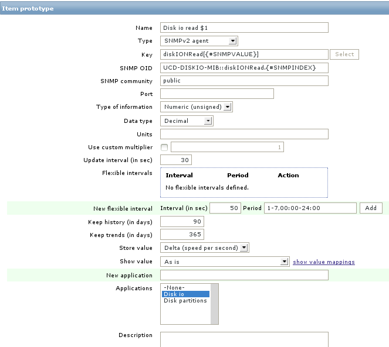
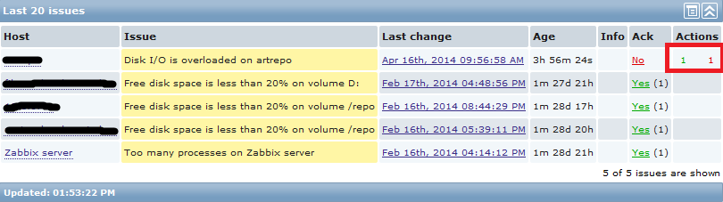
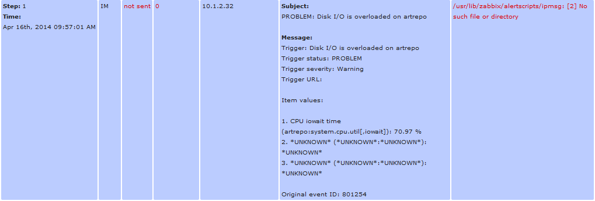

配置Zabbix
安装
建立数据库
配置PHP
需要修改PHP的默认参数
max_execution_time = 300
memory_limit = 128M
post_max_size = 16M
upload_max_filesize = 2M
max_input_time = 300
# date.timezone = Europe/Riga
配置Zabbix Server
配置Zabbix Agent
安装Windows Agent
从官方网站上下载Windows的软件包，32位和64位打包在一起。然后按照文档中执行就可以了：
将agent安装为Windows服务。
zabbix_agentd.exe --install
默认配置文件为：c:\zabbix_agentd.conf。也可以自由设定：
zabbix_agentd.exe --config 'c:\zabbix\config\zabbix_agentd.conf' --install
启动zabbix Agent
zabbix_agentd.exe [--config 'c:\zabbix\config\zabbix_agentd.conf'] --start
SNMP Discovery
Zabbix自身带有不少请求SNMP数据的模板可以使用，不过通过自定义的可以获取更多的数据。例如：磁盘的IO，CPU的负载，TCP的连接情况等等。
在Zabbix的手册中对如何自定义SNMP discovery 策略有介绍，在此，结合自己的的经历详细说明如何添加自定义 discovery, item prototypes等。
首先需要对Net-SNMP的MIB有一点点了解，在此以添加对Disk IO的监控为例，相关OID其OID为：”.1.3.6.1.4.1.2021.13.15.1.1.“。树形结构为：
| OID | Mean |
|---|---|
| .1.3.6.1.4.1.2021.13.15.1.1 | UCD-DISKIO-MIB:: |
| .1.3.6.1.4.1.2021.13.15.1.1.1 | diskIOIndex |
| .1.3.6.1.4.1.2021.13.15.1.1.2 | diskIODevice（设备名） |
| .1.3.6.1.4.1.2021.13.15.1.1.3 | diskIONRead |
| .1.3.6.1.4.1.2021.13.15.1.1.4 | diskIONWritten |
| .1.3.6.1.4.1.2021.13.15.1.1.5 | diskIOReads |
| .1.3.6.1.4.1.2021.13.15.1.1.6 | diskIOWrites |
| .1.3.6.1.4.1.2021.13.15.1.1.9 | diskIOLA1 |
| .1.3.6.1.4.1.2021.13.15.1.1.10 | diskIOLA5 |
| .1.3.6.1.4.1.2021.13.15.1.1.11 | diskIOLA15 |
| .1.3.6.1.4.1.2021.13.15.1.1.12 | diskIONReadX |
| .1.3.6.1.4.1.2021.13.15.1.1.13 | diskIONWrittenX |
MIB的信息可以通过oid-info查看。接下假定你有一个正常运行的snmpd服务。命令：snmpwalk -v 2c -c public localhost .1.3.6.1.4.1.2021.13.15.1.1.3 可查询到本机各磁盘从开机到当前读取了多少字节。
新建discovery条目
- 打开Zabbix监控页面后，进入”configuration” –> “Templates“，在此将磁盘IO监控项放入到模板”Template SNMP Disks“（仅为方便归类，可任意）。
- 进入”Template SNMP Disks“的”discovery“，点击右上方的”Create discovery rule“新建一条发现策略。内容填写如下图所示。
其中需要注意的是：

- Type一定要选择”SNMP“，版本根据”snmpd“提供来选择
- key和SNMP OID一定要设定为”UCD-DISKIO-MIB::diskIODevice和diskIODevice这与后面”item prototypes“的名称有莫大的关联。如果自定义其它SNMP信息，应该将其设定为对应的item name。
- Name是自定义的，其它参数都是默认。
- 建立好discovery rule后，再新建item prototypes。点击新建的策略”Disk io 进入其item prototypes新建发现的项目，内容填写如下图所示：
其中需要注意的是：
- SNMP OID填为你希望获取数据的OID，注意一般会加上一个Zabbix宏”#SNMPINDEX“，这主要是因为snmpd返回的数据一般为很多项，它会自动建立一个索引来对应不同项。此项我们读取磁盘的读操作数据。
- key
- 另外还有Store value和show value等其它选项，根据数据特点设定。 由于此处snmpd返回的是从开机到当前的总读取数据量，所以存储值选择”Delta“
Export and Import
报警通知
请确认当前已开启了报警通知功能：Configuration -> Actions ->Event source（右上角）-> 选择Triggers -> 确认下面的“Report problems to Zabbix administrators”的状态为：Enabled。否则系统将不发送报警。
邮件报警
自定义报警
zabbix提供了多种报警方式，但是还是满足不了要求怎么办？使用脚本自定义报警。 [4]首先需要在zabbix server的配置文件/etc/zabbix/zabbix_server.conf中通过AlertScriptsPath指定自定义命令所在的文件夹，其默认值为：/usr/local/share/zabbix/alertscripts（依赖于编译时的datadir设定值）。添加自定义报警步骤如下：
zabbix调用自定义报警脚本时会向其传递三个参数： * 第一个为接收者 * 第二个为主题 * 第三个消息内容
#!/bin/bash
to=$1
subject=$2
body=$3
cat <<EOF | mail -s "$subject" "$to"
$body
EOF
在脚本中可以充分利用这三个参数。下面是利用IP Message进行告警的python脚本。
#!/bin/env python
# -*- coding: utf-8 -*-
# 关于ip messager的协议，请百度
# 手动执行方式：
# ipmsg 10.1.0.1 subject 'msg'
import socket
import sys
def ipmessager(dest, msg):
"""发送消息"""
header = '1:0:哨兵:瞭望塔:32:'
s = socket.socket(socket.AF_INET, socket.SOCK_DGRAM);
for ip in dest:
msg = header + msg
s.sendto(msg.decode('utf-8').encode('gbk'), (ip, 2425))
if __name__ == '__main__':
if len(sys.argv) != 4:
sys.exit("usage:\n\t%s <ip> <subject> <msg>" % sys.argv[0])
to = sys.argv[1].split(',')
subject = sys.argv[2]
msg = '报告！\n%s' % sys.argv[3]
ipmessager(to, msg)
按下面的步骤添加自定义报警：
- 进行报警类型设置：'Administration' → 'Media types'
- 点击'Create media type'Type选择Script，并填写好Name和Script name（不包括路径）
- 为用户添加报警设置。对于当前用户，点击右上角profile设置Media添加新的报警。Send to设定为接收者的IP。
没有接收到报警消息
如果没有收到报警消息，如下图所示，最右侧的一个红色数字1即说明有一个报警没有送达目的地。
点击查看报警的详细信息，会看到详细的信息，如：
由上面可以发现是zabbix调用脚本的路径不正确。而实际上我已经在zabbix_server.conf指定了AlertScriptsPath=/usr/local/bin但是仍然不行。进而发现一个疑似BUG：将AlertScriptsPath是配置文件的第一个有效配置时，zabbix_server居然是使用的默认脚本路径，而将其移到配置文件最后就工作正常了。
安装中可能的问题
Log File Monitoring时ZBX_NOTSUPPORT错误
配置日志文件监控时一直出错，经过在Zabbix Forums上的提醒[1]，仔细查看了agent的调试日志，在其中发现：
# ACTIVE CHECK 主机上没有查询时，返回的data为空。
2526:20130418:020747.866 refresh_active_checks('lab.liuhui.xmu',10051)
2525:20130418:020747.867 agent #1 started [listener]
2526:20130418:020747.867 Sending [{
"host":"node01.liuhui.xmu",
"ip":"192.168.122.11"}]
2526:20130418:020747.868 Before read
2524:20130418:020747.868 agent #0 started [collector]
2524:20130418:020747.868 In init_cpu_collector()
2524:20130418:020747.868 End of init_cpu_collector():SUCCEED
2524:20130418:020747.868 In update_cpustats()
2524:20130418:020747.868 End of update_cpustats()
2526:20130418:020747.869 Got [{
"response":"success",
"data":[]}]
2526:20130418:020747.869 In parse_list_of_checks()
2526:20130418:020747.869 In disable_all_metrics()
2526:20130418:020747.869 In process_active_checks('lab.liuhui.xmu',10051)
2526:20130418:020747.869 End of process_active_checks()
# 这是另外一个ACTIVE CHECK日志，此时我定义了一个日志监视的item
# 可以发现agent已经开始处理日志文件，但是没有相应的权限，最终出错，返回
# ZBX_NOTSUPPORT
4320:20130418:165640.307 refresh_active_checks('lab.liuhui.xmu',10051)
4320:20130418:165640.308 Sending [{
"request":"active checks",
"host":"node01.liuhui.xmu",
"ip":"192.168.122.11"}]
4320:20130418:165640.309 Before read
4320:20130418:165640.310 Got [{
"response":"success",
"data":[
{
"key":"log[\/var\/log\/messages,,,,]",
"delay":30,
"lastlogsize":0,
"mtime":0}]}]
4320:20130418:165640.310 In parse_list_of_checks()
4320:20130418:165640.310 In disable_all_metrics()
4320:20130418:165640.310 In add_check() key:'log[/var/log/messages,,,,]' refresh:30 lastlogsize:0 mtime:0
4320:20130418:165640.310 End of add_check()
4320:20130418:165640.310 In process_active_checks('lab.liuhui.xmu',10051)
4320:20130418:165640.310 In process_log() filename:'/var/log/messages' lastlogsize:0
4320:20130418:165640.310 cannot open '/var/log/messages': [13] Permission denied
4320:20130418:165640.310 Active check [log[/var/log/messages,,,,]] is not supported. Disabled.
4320:20130418:165640.310 In process_value() key:'node01.liuhui.xmu:log[/var/log/messages,,,,]' value:'ZBX_NOTSUPPORTED'
# 再看看下面的日志，这是agent输出的一个成功的日志监控的调试日志
# 与上面的主要差别在于，agent进程有权限访问server要求监控的日志文件
3904:20130419:020817.682 refresh_active_checks('lab.liuhui.xmu',10051)
3904:20130419:020817.683 Sending [{
"request":"active checks",
"host":"node01.liuhui.xmu",
"ip":"192.168.122.11"}]
3904:20130419:020817.683 Before read
3904:20130419:020817.684 Got [{
"response":"success",
"data":[
{"key":"log[\/var\/log\/zabbix\/zabbix_agentd.log]",
"delay":30,
"lastlogsize":0,
"mtime":0}]}]
3904:20130419:020817.684 In parse_list_of_checks()
3904:20130419:020817.684 In disable_all_metrics()
3904:20130419:020817.684 In add_check() key:'log[/var/log/zabbix/zabbix_agentd.log]' refresh:30 lastlogsize:0 mtime:0
3904:20130419:020817.684 End of add_check()
3904:20130419:020817.685 In process_active_checks('lab.liuhui.xmu',10051)
3904:20130419:020817.685 In process_log() filename:'/var/log/zabbix/zabbix_agentd.log' last
gsize:0
3904:20130419:020817.685 In process_value() key:'node01.liuhui.xmu:log[/var/log/zabbix/zabb_agentd.log]' value:' 2058:20130417:235114.399 Starting Zabbix Agent [node01.liuhui.xmu].
bbix 2.0.5 (revision 33558).'
3904:20130419:020817.685 In send_buffer() host:'lab.liuhui.xmu' port:10051 values:0/100
3904:20130419:020817.685 End of send_buffer():SUCCEED
3904:20130419:020817.685 buffer: new element 0
3904:20130419:020817.685 End of process_value():SUCCEED
3904:20130419:020817.685 In process_log() filename:'/var/log/zabbix/zabbix_agentd.log' lastlogsize:101
3904:20130419:020817.685 In process_value() key:'node01.liuhui.xmu:log[/var/log/zabbix/zabb_agentd.log]' value:' 2062:20130417:235114.420 agent #3 started [listener]'
3904:20130419:020817.685 In send_buffer() host:'lab.liuhui.xmu' port:10051 values:1/100
3904:20130419:020817.685 JSON before sending [{
"request":"agent data",
"data":[
{
"host":"node01.liuhui.xmu",
"key":"log[\/var\/log\/zabbix\/zabbix_agentd.log]",
"value":" 2058:20130417:235114.399 Starting Zabbix Agent [node01.liuhui.xmu]. Zabbix 2.0.5 (revision 33558).",
"lastlogsize":101,
"clock":1366308497,
"ns":685378025}],
"clock":1366308497,
"ns":685485907}]
3904:20130419:020817.686 JSON back [{
"response":"success",
"info":"Processed 1 Failed 0 Total 1 Seconds spent 0.000075"}]
3904:20130419:020817.686 In check_response() response:'{
……
通过上面的日志分析，可以发现，server监视agent上的日志文件，需要agent进程可以读取相应的文件，否则会出错。关于监控日志的详细文档见Zabbix Manual [2][3]
Zabbix Server is not running
请确认数据库的配置是否正确，特别是调整过相关配置时：[5]
- Zabbix Server的配置文件/etc/zabbix/zabbix_server.conf
- 前端网页的配置文件：/etc/zabbix/web/zabbix.conf.php
如果确认上面两处设置正确，请继续：
检查是否开启了SELinux功能：
[root@puppet ~]# sestatus SELinux status: enabled # enabled说明开启了SELinux SELinuxfs mount: /selinux Current mode: enforcing Mode from config file: enforcing Policy version: 24 Policy from config file: targeted
请查看日志文件/var/log/audit/audit.log中是否有拒绝http操作的记录。 如：（如果没有安装audit或启用auditd服务，则没有日志）
type=AVC msg=audit(1403973943.600:949): avc: denied { name_connect } for pid=2702 comm="httpd" dest=10051 scontext=unconfined_u:system_r:httpd_t:s0 tcontext=system_u:object_r:port_t:s0 tclass=tcp_socket 9058 type=SYSCALL msg=audit(1403973943.600:949): arch=c000003e syscall=42 success=no exit=-13 a0=d a1=7fb9ac277ba0 a2=1c a3=ff00 items=0 ppid=2659 pid=2702 auid=0 uid=48 gid=48 euid=48 suid=48 fsuid=48 egid=48 s gid=48 fsgid=48 tty=(none) ses=1 comm="httpd" exe="/usr/sbin/httpd" subj=unconfined_u:system_r:httpd_t:s0 key=(null)接下来请查看SELinux策略是否允许http服务连接数据库：
[root@puppet ~]# getsebool -a | grep http allow_httpd_anon_write --> off allow_httpd_mod_auth_ntlm_winbind --> off allow_httpd_mod_auth_pam --> off allow_httpd_sys_script_anon_write --> off httpd_builtin_scripting --> on httpd_can_check_spam --> off httpd_can_network_connect --> on # 如果此项为off，则http无法连 接数据库 httpd_can_network_connect_cobbler --> off httpd_can_network_connect_db --> off
参考资料
| [1] | https://www.zabbix.com/forum/showthread.php?t=23033 |
| [2] | https://www.zabbix.com/documentation/2.0/manual/config/items/itemtypes/log_items |
| [3] | https://www.zabbix.com/documentation/2.0/manual/config/items/itemtypes/zabbix_agent#supported_item_keys |
| [4] | Custom alertscripts |
| [5] | http://blog.csdn.net/frank0521/article/details/17378915 |